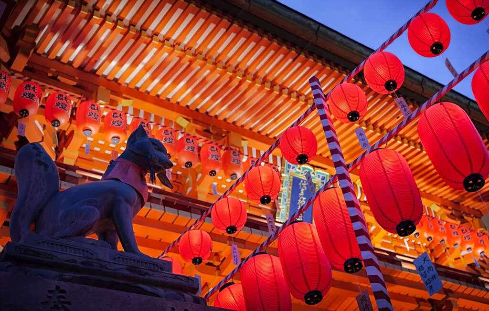

Semana da Cultura Japonesa
Culinária, tradição e encontros

Uma viagem pelos sabores do Japão
Durante três dias, o público poderá participar de oficinas de culinária, degustações, palestras e apresentações culturais em um ambiente preparado para reunir famílias, estudantes e admiradores da cultura japonesa.
18, 19 e 20 de setembro de 2026, das 10h às 21h.
Local: Centro Cultural do Bairro das Flores, São Paulo - SP.
Entrada gratuita nas apresentações culturaisConheça o evento
As informações foram organizadas em páginas separadas. Use o menu acima para consultar as atividades, os horários, o cardápio, a galeria, o vídeo e os dados para inscrição.
Programação
Veja os tipos de oficinas, degustações, palestras e apresentações culturais.
Abrir programaçãoSemana da Cultura Japonesa
Todos os direitos reservados.